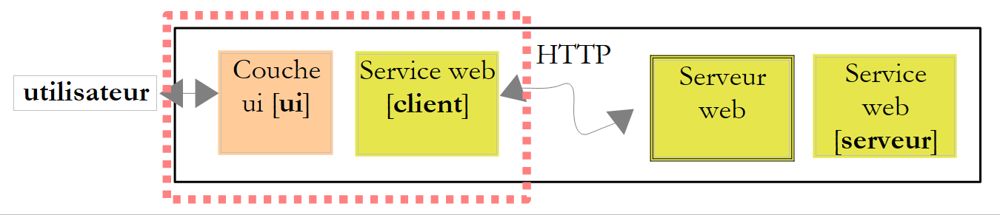
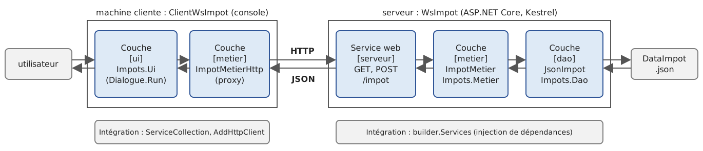
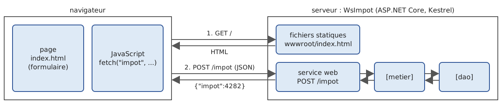
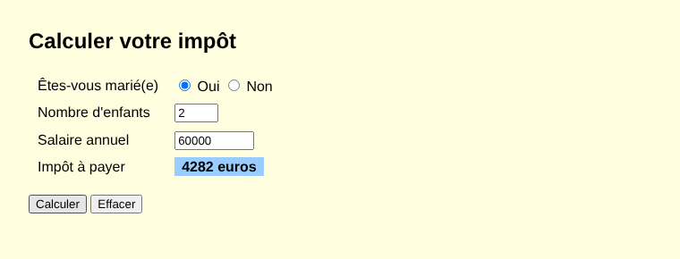

13. Services web
13.1. Introduction
Nous avons présenté au chapitre précédent plusieurs applications client-serveur TCP/IP. Dans la mesure où les clients et le serveur échangent des lignes de texte, ils peuvent être écrits dans n'importe quel langage. Le client doit simplement connaître le protocole de dialogue attendu par le serveur.
Les services web sont, eux aussi, des applications serveur TCP/IP. Ils présentent les caractéristiques suivantes :
- ils sont hébergés par des serveurs web et le protocole d'échange client-serveur est HTTP (HyperText Transfer Protocol), un protocole au-dessus de TCP/IP, que nous avons découvert au chapitre précédent ;
- le service web a un protocole de dialogue standard, quel que soit le service assuré. Un service web offre divers services S1, S2…, Sn. Chacun d'eux attend des paramètres fournis par le client et rend à celui-ci un résultat. Pour chaque service, le client a besoin de savoir :
- comment désigner le service Si ;
- la liste des paramètres qu'il faut lui fournir et leur type ;
- le type du résultat retourné par le service. Une fois ces éléments connus, le dialogue client-serveur suit le même format, quel que soit le service web interrogé. L'écriture des clients est ainsi normalisée ;
- pour se protéger des attaques venant de l'Internet, beaucoup d'organisations n'ouvrent sur l'extérieur que certains ports de leurs serveurs : essentiellement les ports 80 (HTTP) et 443 (HTTPS) du service web. Tous les autres ports sont verrouillés. Aussi les applications client-serveur telles que celles du chapitre précédent sont-elles en général réservées au réseau privé de l'organisation (intranet). Loger un service au sein d'un serveur web le rend accessible à toute la communauté Internet ;
- le service web peut être vu comme un objet distant : les services offerts deviennent alors des méthodes de cet objet. Un client peut utiliser cet objet distant comme s'il était local, au travers d'un objet intermédiaire appelé proxy (mandataire), qui cache toute la partie communication réseau. On construit ainsi un client indépendant de cette couche : si celle-ci vient à changer, le reste du client n'a pas à être modifié ;
- comme pour les applications client-serveur TCP/IP du chapitre précédent, le client et le serveur peuvent être écrits dans des langages quelconques. Ils échangent des lignes de texte qui comportent deux parties : les entêtes nécessaires au protocole HTTP et le corps du message, dont le format est convenu entre le client et le serveur.
L'architecture d'une application client-serveur à base de service web est la suivante :

C'est une extension de l'architecture en couches du chapitre 6, à laquelle on ajoute des couches de communication réseau spécialisées : le client du service web côté client, le service web lui-même côté serveur. Nous avons déjà rencontré une architecture semblable avec le serveur TCP de calcul de l'impôt (version 8) du chapitre précédent.
13.1.1. Hier : SOAP et WSDL
En 2008, ce cours utilisait les services web SOAP de .NET Framework : des fichiers [.asmx] créés avec Visual Web Developer, dont les méthodes publiques étaient marquées par l'attribut [[WebMethod]]. Le client envoyait une requête HTTP POST dont le corps était un document XML au format SOAP (Simple Object Access Protocol) : une « enveloppe » contenant le nom de la méthode et ses paramètres. Le serveur répondait par une autre enveloppe XML contenant le résultat. Chaque service était décrit par un document XML au format WSDL (Web Services Description Language), disponible à l'URL du service suivie de [?WSDL] : il listait les méthodes, leurs paramètres et leurs types. À partir de ce document, des outils (l'assistant « Add Web Reference » de Visual Studio, [wsimport] en Java) généraient automatiquement le proxy du service. Cette technologie, puis son successeur WCF (Windows Communication Foundation), ont été très utilisés dans les années 2000. Ils sont aujourd'hui abandonnés : ni ASMX, ni la partie serveur de WCF n'existent dans .NET (Core) — seul un portage communautaire, CoreWCF, existe pour migrer d'anciennes applications. Les raisons de cet abandon sont la lourdeur du XML et des enveloppes SOAP, la complexité des normes associées (WS-Security, WS-Addressing…) et la difficulté d'appeler ces services depuis un navigateur.
13.1.2. Aujourd'hui : REST et JSON
Les services web actuels suivent pour la plupart le style REST (REpresentational State Transfer) et échangent des documents JSON (JavaScript Object Notation, présenté au chapitre 5). Le style REST repose sur les principes suivants :
- le service expose des ressources, chacune désignée par une URL : [/impot], [/clients/12], [/clients/12/commandes] ;
- on agit sur ces ressources avec les méthodes (on dit aussi verbes) du protocole HTTP, chacune ayant une signification précise ;
- le résultat de l'action est indiqué par le code de statut HTTP de la réponse ;
- le corps des requêtes et des réponses est le plus souvent un document JSON, plus compact et plus simple que XML ;
- le service est sans état : chaque requête contient toutes les informations nécessaires à son traitement ; le serveur ne mémorise rien d'une requête à l'autre pour un client donné.
Les méthodes HTTP les plus utilisées sont les suivantes :
Méthode | Usage | Exemple |
GET | lire une ressource ; les paramètres éventuels sont dans l'URL | GET /clients/12 |
POST | créer une ressource, ou demander un traitement ; les données sont dans le corps de la requête | POST /clients |
PUT | remplacer une ressource | PUT /clients/12 |
PATCH | modifier une partie d'une ressource | PATCH /clients/12 |
DELETE | supprimer une ressource | DELETE /clients/12 |
Les codes de statut, déjà rencontrés au chapitre précédent, prennent ici tout leur sens :
Code | Signification |
200 OK | la requête a réussi ; le corps de la réponse contient le résultat |
201 Created | la ressource a été créée ; l'entête [Location] donne son URL |
204 No Content | la requête a réussi ; la réponse n'a pas de corps |
400 Bad Request | la requête est incorrecte (paramètre absent ou invalide…) |
404 Not Found | la ressource demandée n'existe pas |
500 Internal Server Error | une erreur imprévue s'est produite sur le serveur |
Un service REST n'a pas d'équivalent obligatoire du WSDL. Il est cependant d'usage de le décrire par un document OpenAPI (anciennement Swagger), au format JSON ou YAML, à partir duquel des outils peuvent générer de la documentation, des pages de test et des clients. Nous y reviendrons.
Signalons enfin gRPC, conçu par Google : les méthodes du service et leurs messages sont décrits dans un fichier [.proto], à partir duquel des outils génèrent le serveur et le client, comme au temps du WSDL ; les messages sont codés dans un format binaire compact (Protocol Buffers) et transportés par HTTP/2. gRPC est très efficace et apprécié pour les échanges entre services d'une même organisation, mais il est mal adapté aux navigateurs. Il est disponible en .NET avec le paquet [Grpc.AspNetCore], que nous n'utiliserons pas.
13.1.3. ASP.NET Core et les Minimal API
Pour écrire nos services web, nous utiliserons ASP.NET Core, le cadre de développement web de .NET, et plus précisément ses Minimal API (.NET 6, 2021) : on y associe directement une URL et une méthode HTTP à une fonction C#, le plus souvent une lambda. Le serveur web est Kestrel, un serveur HTTP écrit en C# et intégré à l'application : il n'est pas nécessaire d'installer un serveur web séparé, comme l'était IIS (Internet Information Services) en 2008. ASP.NET Core fait partie du framework partagé [Microsoft.AspNetCore.App], installé avec le SDK .NET : il ne nécessite aucun paquet NuGet.
Visual Web Developer, l'outil gratuit de Microsoft utilisé en 2008 pour écrire les services web, n'existe plus : les commandes [dotnet] suffisent, et tout éditeur de code convient (Visual Studio Code, Visual Studio, Rider).
13.2. Un premier service web
Nous allons construire une première application client-serveur ayant l'architecture simplifiée suivante :

Les projets de ce chapitre sont regroupés dans une solution [13-services-web.slnx], construite avec les commandes suivantes, tapées dans le dossier [13-services-web] :
Les projets sont déjà prêts dans les codes du cours : le dossier [13-services-web] du zip contient la solution et les six projets, complets et modifiés comme décrit dans ce chapitre. Le lecteur n'a donc pas à taper les commandes ci-dessus (elles échoueraient d'ailleurs, puisque les dossiers existent déjà) : elles montrent comment ces projets ont été créés, et comment créer les siens. Pour exécuter un projet livré, il suffit de se placer dans son dossier et de taper [dotnet run] (ou d'ouvrir [13-services-web.slnx] dans Visual Studio ou VS Code). Il en va de même plus loin pour les commandes [dotnet add ... reference] et [dotnet add ... package] : les références et les paquets sont déjà présents dans les fichiers [.csproj] livrés.
Le modèle [web] de [dotnet new] crée le projet d'une application ASP.NET Core vide. Les trois services web de ce chapitre ([WsHello], [WsOperations], [WsImpot]) sont créés avec ce modèle, et leurs clients avec le modèle [console] habituel. On obtient l'arborescence suivante (seuls les principaux fichiers sont indiqués) :
13.2.1. La partie serveur

Le fichier de projet [WsHello.csproj] généré par [dotnet new web] est le suivant :
Commentaires :
- ligne 1 : la seule différence avec un projet console est le SDK utilisé, [Microsoft.NET.Sdk.Web] au lieu de [Microsoft.NET.Sdk]. Le SDK web fait référence au framework partagé ASP.NET Core et ajoute aux [using] implicites les espaces de noms d'ASP.NET Core ([Microsoft.AspNetCore.Builder], [Microsoft.AspNetCore.Http], [Microsoft.Extensions.DependencyInjection], [Microsoft.Extensions.Logging]…) ;
- il n'y a pas de ligne [OutputType] : une application web est toujours un exécutable.
Le programme [Program.cs] généré est réduit à quatre instructions :
- ligne 1 : [WebApplication.CreateBuilder] prépare la construction de l'application web : il lit la configuration (fichiers [appsettings.json], variables d'environnement, arguments de la ligne de commande), met en place la journalisation et le conteneur d'injection de dépendances que nous avons utilisé au chapitre 6. [builder] permet de compléter cette préparation, par exemple d'enregistrer des services dans le conteneur ;
- ligne 2 : l'application est construite ;
- ligne 4 : on associe la méthode HTTP GET et l'URL [/] (la racine du site) à une lambda. Lorsque le serveur recevra la requête [GET /], il exécutera la lambda et enverra au client le résultat de celle-ci, ici le texte [Hello World!] ;
- ligne 6 : le serveur Kestrel est lancé ; il attend les requêtes jusqu'à l'arrêt de l'application (Ctrl-C).
Le modèle crée également trois fichiers de configuration :
- [appsettings.json] : la configuration de l'application ;
- [appsettings.Development.json] : des valeurs qui remplacent celles de [appsettings.json] lorsque l'application s'exécute dans l'environnement « Development » ;
- [Properties/launchSettings.json] : des « profils de lancement » utilisés par [dotnet run] et par Visual Studio. Ils fixent le port d'écoute, choisi au hasard par [dotnet new] (5273 par exemple), et la variable d'environnement [ASPNETCORE_ENVIRONMENT=Development].
L'environnement d'exécution (Development, Staging, Production) change le comportement de l'application. En particulier, dans l'environnement Development, une exception non gérée produit une réponse contenant tous les détails de l'exception, pile des appels comprise : c'est utile au développeur, mais ce serait une faille de sécurité en production. Pour que nos résultats soient ceux qu'obtiendrait un utilisateur, nous avons supprimé [launchSettings.json] et [appsettings.Development.json] (ils sont donc absents des projets livrés) : nos services s'exécutent dans l'environnement par défaut, Production. Le port d'écoute est alors fixé dans [appsettings.json] :
- lignes 2-5 : la journalisation : les messages de niveau [Information] et au-delà sont affichés, sauf ceux d'ASP.NET Core lui-même (catégories [Microsoft.AspNetCore.*]), limités aux avertissements ([Warning]) et aux erreurs ;
- ligne 8 : les noms de machine acceptés dans l'entête HTTP [Host] des requêtes ; [*] les accepte tous ;
- ligne 9 : nous avons ajouté cette ligne : le serveur écoute sur le port 5100 de la machine [localhost]. On pourrait aussi passer l'adresse en argument : [dotnet run --urls http://localhost:5100], ou par la variable d'environnement [ASPNETCORE_URLS].
Le service web [WsHello] reprend le service de 2008, dont l'unique méthode [DisBonjourALaDame] rendait la chaîne [Bonjour Mme xx]. Son code [Program.cs] est le suivant :
Commentaires :
- ligne 6 : la racine du site rend un texte qui indique comment utiliser le service ;
- ligne 11 : le modèle d'URL (on dit la route) [/hello/{nom}] contient un paramètre de route [{nom}] : il correspond à n'importe quel segment d'URL placé après [/hello/]. Ainsi l'URL [/hello/Carla%20Bruni] donne à [{nom}] la valeur [Carla Bruni] (le code [%20] est le codage d'un espace dans une URL). ASP.NET Core passe automatiquement cette valeur au paramètre de même nom de la lambda : c'est la liaison de paramètres (parameter binding). La méthode web de 2008 est devenue une URL. La lambda rend une chaîne de caractères : celle-ci est envoyée telle quelle au client, comme document texte (type [text/plain]) ;
- ligne 14 : la même chose, mais la lambda rend un objet de type [Salutation]. ASP.NET Core le sérialise en JSON avec [System.Text.Json] (chapitre 5) et l'envoie au client comme document de type [application/json]. C'est la forme normale de la réponse d'un service web REST ;
- ligne 17 : le serveur attend les requêtes ;
- ligne 20 : le type du résultat, un [record] (chapitre 4). Dans un programme à instructions de haut niveau, les déclarations de types se placent après les instructions.
Le service est lancé par la commande [dotnet run], tapée dans le dossier du projet. Il affiche son journal :
- ligne 3 : le serveur écoute sur le port 5100 ;
- ligne 5 : l'application est prête. Elle s'arrête par Ctrl-C ;
- ligne 7 : l'environnement d'exécution est Production ;
- ligne 9 : le dossier racine du contenu de l'application, où sont cherchés [appsettings.json] et le dossier [wwwroot] des fichiers statiques. Avec [dotnet run], c'est le dossier du projet (le cours a remplacé le début du chemin par [...]) ;
- ligne 11 : ce message est apparu à l'arrêt du serveur par Ctrl-C, après les essais des paragraphes suivants.
Chaque message du journal indique son niveau ([info], [warn], [fail], [crit]…) et sa catégorie, ici [Microsoft.Hosting.Lifetime] suivi d'un numéro d'événement entre crochets.
13.2.2. Interroger le service avec curl
Pendant que le service s'exécute, interrogeons-le dans une seconde fenêtre de commandes avec l'outil [curl] présenté au chapitre précédent. L'option [-i] affiche les entêtes de la réponse avant son corps, et l'option [-s] (silent) supprime la barre de progression :
- ligne 2 : la requête a réussi ;
- ligne 3 : le document est un texte (UTF-8) ;
- ligne 6 : le document est envoyé par morceaux (chunks), chacun précédé de sa taille : Kestrel n'a pas eu à calculer la taille totale du document avant de commencer à l'envoyer ;
- ligne 8 : le résultat de la méthode web.
En 2008, le service ASMX répondait par un document XML : [<string xmlns="http://st.istia.univ-angers.fr">Bonjour Mme Carla Bruni</string>]. Demandons maintenant la version JSON :
- ligne 3 : le document est maintenant de type [application/json] ;
- ligne 8 : l'objet [Salutation] sérialisé. On remarquera que les noms des propriétés C# [Nom] et [Message] sont devenus [nom] et [message] : ASP.NET Core utilise les options JSON « Web » de [System.Text.Json] ([JsonSerializerDefaults.Web], chapitre 5), qui écrivent les noms en « camelCase », l'usage en JavaScript.
Une URL qui ne correspond à aucune route donne la réponse 404 :
On peut aussi taper l'URL [http://localhost:5100/hello/Carla Bruni] dans la barre d'adresse d'un navigateur, qui affichera le texte reçu : un service web interrogé par GET se teste très simplement. En 2008, le serveur ASMX générait pour cela une page HTML de test de chaque méthode.
13.2.3. Un client console

Il est possible d'écrire le client du service avec un simple client TCP, comme au chapitre précédent : il suffit d'envoyer la requête HTTP et de lire la réponse. On utilise cependant la classe [HttpClient], elle aussi présentée au chapitre précédent, qui gère le protocole HTTP pour nous. Le projet [ClientWsHello] est un projet console ordinaire. Son programme est le suivant :
Commentaires :
- ligne 1 : l'espace de noms des méthodes d'extension de [HttpClient] qui échangent du JSON ;
- ligne 5 : l'URL du service est passée en argument ou, à défaut, vaut [http://localhost:5100/]. C'est l'équivalent du fichier [app.config] de 2008, qui contenait l'adresse du service : si celle-ci change, le client n'a pas à être recompilé ;
- ligne 8 : un unique [HttpClient] pour tout le programme. Sa propriété [BaseAddress] est l'URL de base, à laquelle s'ajoutent les URL relatives des requêtes. Attention : l'URL de base doit se terminer par [/] pour que [hello/...] lui soit ajouté ;
- ligne 22 : le nom saisi devient un segment de l'URL. [Uri.EscapeDataString] code les caractères qui n'y sont pas autorisés : l'espace devient [%20], le é devient [%C3%A9]… ;
- ligne 24 : une requête GET dont la réponse est lue comme une chaîne de caractères ;
- ligne 27 : une requête GET dont la réponse JSON est désérialisée en un objet de type [Salutation]. Le client n'a pas accès au type [Salutation] du serveur : il déclare le sien (ligne 38), avec les mêmes noms de propriétés. La désérialisation utilise elle aussi les options « Web », qui ignorent la casse des noms : [nom] est affecté à la propriété [Nom] ;
- ligne 30 : les deux méthodes lancent une [HttpRequestException] si le service est injoignable ou s'il répond avec un code d'erreur (4xx, 5xx).
Résultats, le service étant lancé :
La ligne 4 affiche l'objet [Salutation] reçu, au format de la méthode [ToString] générée pour les [record]. Si l'on désigne une adresse où aucun service n'écoute, la connexion est refusée :
En 2008, le client utilisait un proxy de classe [ServiceSoapClient], généré par Visual Studio à partir du WSDL du service, et appelait la méthode distante comme une méthode locale : [new ServiceSoapClient().DisBonjourALaDame("Carla Bruni")]. Nous appelons ici directement les URL du service. Nous écrirons un véritable proxy pour le service de calcul de l'impôt.
13.2.4. La description du service : OpenAPI
Le WSDL de 2008 décrivait le service de façon normalisée. Son équivalent actuel est le document OpenAPI. Depuis .NET 9, ASP.NET Core sait le produire à partir des routes déclarées, grâce au paquet [Microsoft.AspNetCore.OpenApi] :
Le document [/openapi/v1.json] décrit alors chaque route : son URL, sa méthode HTTP, ses paramètres et leur type, le schéma JSON de ses réponses. Des outils comme Swagger UI ou Scalar en font une page web de test, et des générateurs comme Kiota ou NSwag en tirent un client typé dans divers langages, exactement comme le faisait l'assistant « Add Web Reference » avec le WSDL. Le paquet [Microsoft.AspNetCore.OpenApi] n'étant pas disponible sur notre machine de test (qui n'a pas accès à l'Internet), nous ne pouvons pas montrer le document produit.
13.3. Un service web d'opérations arithmétiques
Le service précédent offrait une unique méthode. Nous considérons maintenant, comme en 2008, un service web qui offre les quatre opérations arithmétiques : ajouter(a, b), soustraire(a, b), multiplier(a, b) et diviser(a, b). Nous allons en profiter pour étudier les deux façons de transmettre des paramètres à un service web et la façon de signaler les erreurs.
13.3.1. La partie serveur
Le service [WsOperations] accepte deux formes de requête :
Requête | Paramètres |
GET /ajouter?a=1.5&b=2 | l'opération dans le chemin de l'URL, les nombres dans sa chaîne de requête |
POST /calcul | un document JSON dans le corps de la requête : [{"operation":"ajouter","a":1.5,"b":2}] |
Dans les deux cas, la réponse est un document JSON : [{"operation":"ajouter","a":1.5,"b":2,"resultat":3.5}]. GET convient aux requêtes simples, qui ne modifient rien sur le serveur : l'URL peut être tapée dans un navigateur, mise dans un favori, et sa réponse peut être conservée par un cache. POST convient aux données volumineuses ou structurées. Son fichier [appsettings.json] est celui de [WsHello], au port près (5110). Son programme est le suivant :
Commentaires :
- ligne 6 : on enregistre le service qui produit des réponses d'erreur au format Problem Details. Ce format, normalisé par la RFC 9457, est un document JSON de type [application/problem+json] qui décrit une erreur : son type, un titre, le code de statut, un détail et d'éventuelles informations complémentaires. C'est la façon standard, pour un service REST, de dire ce qui ne va pas ;
- ligne 9 : on installe un middleware, c'est-à-dire un maillon de la chaîne de traitement que traverse chaque requête. Celui-ci donne un corps « Problem Details » aux réponses d'erreur qui n'en ont pas, comme les réponses 404 produites par ASP.NET Core pour les URL inconnues ;
- lignes 13-14 : la requête GET. Le paramètre [operation] de la lambda est lié au paramètre de route [{operation}]. Les paramètres [a] et [b], qui ne figurent pas dans la route, sont liés aux paramètres de même nom de la chaîne de requête ([?a=1.5&b=2]). Ils sont déclarés de type [string?] : un paramètre absent vaut [null]. Nous aurions pu les déclarer de type [double] : ASP.NET Core aurait alors fait lui-même la conversion, et rejeté une valeur absente ou incorrecte par une réponse 400 sans explication. En les recevant sous forme de chaînes, nous gardons la maîtrise des messages d'erreur ;
- lignes 18-19 : la requête POST. Le paramètre [demande] est d'un type complexe ([DemandeCalcul], ligne 72) : ASP.NET Core le désérialise à partir du corps JSON de la requête. Ses propriétés sont nullables : une propriété absente du document JSON vaut [null] ;
- lignes 25-26 : la conversion d'une chaîne en nombre, [null] si elle échoue. Dans une URL comme en JSON, les nombres s'écrivent avec un point décimal : la conversion se fait dans la culture invariante (chapitre 5), et non dans la culture française du serveur, qui attendrait une virgule. Les fonctions locales [LireNombre] et [Calculer] sont déclarées après [app.Run] ; elles sont statiques ([static]) car elles n'utilisent aucune variable du programme principal ;
- lignes 33-39 : l'opération demandée est représentée par un délégué (chapitre 7) choisi par une expression [switch] : une lambda par opération, [null] pour une opération inconnue ;
- lignes 42-53 : on vérifie les trois paramètres en accumulant les erreurs dans un dictionnaire qui associe à chaque paramètre la liste de ses messages d'erreur ;
- ligne 55 : si une erreur a été trouvée, on rend une réponse 400. Le filtrage par motif [a is not double x] est vrai si [a] vaut [null] ; sinon, il affecte à la variable [x] la valeur de [a]. Le compilateur sait qu'après ce [if], [calcul], [x] et [y] ont une valeur : il n'émet aucun avertissement ;
- ligne 58 : la classe statique [Results] fournit les réponses usuelles. [ValidationProblem] produit une réponse 400 au format « Problem Details » contenant les erreurs de validation (propriété [errors]) ;
- lignes 62-65 : la division par zéro est refusée par une réponse 400 au format « Problem Details », produite par [Results.Problem]. Ce refus est nécessaire : en C#, la division d'un [double] par zéro ne lance pas d'exception mais donne l'infini ([double.PositiveInfinity]), qu'un document JSON ne sait pas représenter. Le service de 2008, qui ne faisait pas ce contrôle, aurait renvoyé l'infini, que la sérialisation XML de .NET écrit [INF] ;
- ligne 68 : la réponse 200, dont le corps est l'objet [ResultatCalcul] sérialisé en JSON ;
- lignes 72-74 : les deux types échangés avec les clients. Ces objets, qui ne servent qu'à transporter des données entre deux applications, sont appelés DTO (Data Transfer Object). Les [record] sont parfaits pour cet usage.
La méthode [Calculer] rend un objet de type [IResult] : c'est l'interface des objets produits par [Results]. Chacun sait écrire la réponse HTTP qui lui correspond (code de statut, entêtes, corps).
13.3.2. Essais avec curl
Le service est lancé par [dotnet run] dans le dossier [WsOperations]. Une addition :
Une division par zéro :
- ligne 2 : la requête est refusée ;
- ligne 3 : le corps est un document « Problem Details » ;
- ligne 8 : le document contient les propriétés [type] (une URL qui documente le type d'erreur, ici la section de la RFC 9110 qui définit le code 400), [title], [status] et [detail], fixées par notre appel à [Results.Problem], et [traceId], un identifiant unique de la requête qui permet de retrouver celle-ci dans les journaux du serveur.
Une opération inconnue, un nombre écrit avec une virgule décimale et un nombre absent :
La propriété [errors] du document contient les erreurs de validation, paramètre par paramètre. Une requête POST maintenant. L'option [-d] de [curl] envoie le texte qui la suit dans le corps d'une requête POST, et l'option [-H] ajoute un entête à la requête, ici le type du document envoyé :
Si le document JSON envoyé est incorrect, ASP.NET Core ne peut construire le paramètre [demande] : il répond lui-même 400, sans exécuter notre lambda :
Le document « Problem Details » de la ligne 8 a été produit par le middleware [UseStatusCodePages]. Dans l'environnement Development, il contiendrait la description complète de l'erreur de désérialisation.
13.3.3. La partie client
Le client graphique de 2008 proposait une liste des opérations, deux zones de saisie et un bouton. Notre client console demande sur une ligne l'opération et les deux nombres, puis interroge le service deux fois : par GET, puis par POST, afin de montrer les deux façons de faire. Son programme est le suivant :
Commentaires :
- lignes 25-32 : les nombres sont vérifiés localement, avant tout appel au service, comme le faisait le client graphique de 2008. Ils sont saisis avec une virgule décimale (culture fr-FR) ;
- lignes 40-41 : l'URL de la requête GET. Les nombres doivent y être écrits avec un point décimal : l'interpolation [$"..."] utilisant la culture courante, on construit la chaîne avec [string.Create], qui reçoit la culture à utiliser, ici la culture invariante ;
- ligne 45 : la requête GET et la désérialisation de sa réponse JSON en un objet [ResultatCalcul]. Si le code de statut de la réponse n'est pas un code de succès (2xx), [GetFromJsonAsync] lance une [HttpRequestException] : le corps de la réponse, qui explique l'erreur, est alors perdu ;
- ligne 51 : la propriété [StatusCode] de l'exception contient le code de statut de la réponse, ou [null] si le service n'a pas répondu (service injoignable) ;
- ligne 57 : la requête POST : l'objet [DemandeCalcul] est sérialisé en JSON dans le corps de la requête. [PostAsJsonAsync] ne lance pas d'exception pour un code d'erreur : elle rend la réponse ([HttpResponseMessage]), que l'on examine ;
- ligne 58 : [true] pour un code 2xx ;
- ligne 61 : en cas de succès, le corps est désérialisé en un objet [ResultatCalcul] ;
- lignes 67-75 : en cas d'échec, le corps est un document « Problem Details », désérialisé en un objet [Probleme] (ligne 90) dont on affiche le titre, le détail et les erreurs de validation. La boucle [foreach] déconstruit chaque élément du dictionnaire [Errors] en un tuple (chapitre 5) ; [?? []] remplace un dictionnaire absent par une collection vide ;
- lignes 87-90 : les DTO du client. Ils sont déclarés ici à nouveau : un client ne partage pas le code du serveur, seulement le format des documents JSON échangés. ASP.NET Core fournit bien une classe [ProblemDetails], mais elle fait partie du framework web ; un simple [record] suffit au client.
Résultats, le service étant lancé :
- ligne 3 : l'URL de la requête GET : le nombre 1,5 saisi y est écrit 1.5 ;
- lignes 6-8 : la même erreur vue par les deux requêtes : [GetFromJsonAsync] ne connaît que le code 400, alors que la lecture de la réponse POST donne l'explication fournie par le service ;
- lignes 11-12 : l'opération inconnue a été détectée par le service ;
- ligne 14 : le nombre incorrect a été détecté par le client, qui n'a pas interrogé le service.
13.4. Application exemple - version 9 : un service web de calcul d'impôt
Nous reprenons l'application de calcul de l'impôt. Au chapitre précédent (version 8), nous en avions fait un serveur TCP que l'on pouvait interroger à distance, avec un protocole de dialogue qui lui était propre. Nous en faisons maintenant un service web REST.
13.4.1. L'architecture
L'architecture de la version 9 est la suivante :

- côté serveur, le service web [WsImpot] reçoit les requêtes HTTP et les fait traiter par les couches [metier] et [dao] de la version 5 (chapitre 6), réutilisées telles quelles ;
- côté client, la couche [ui] de la version 5 est elle aussi réutilisée telle quelle. Elle dialogue avec une couche [metier] d'un nouveau genre, [ImpotMetierHttp], qui implémente l'interface [IImpotMetier] en interrogeant le service web : c'est un proxy du service. La couche [ui] ne sait pas que le calcul se fait sur une autre machine ;
- de part et d'autre, l'intégration des couches est confiée au conteneur d'injection de dépendances, qui remplace Spring.NET utilisé en 2008.
13.4.2. Le service web
Le contrat du service est le suivant :
Requête | Réponse en cas de succès | Réponse en cas d'erreur |
GET /impot?marie=o&enfants=2&salaire=60000 | 200 : [{"impot":4282}] | 400 : document « Problem Details » |
POST /impot avec le corps [{"marie":true,"enfants":2,"salaire":60000}] | 200 : [{"impot":4282}] | 400 : document « Problem Details » |
Le projet [WsImpot] fait référence aux projets des couches [dao] et [metier] de la version 5 :
- lignes 11-12 : les deux références de projet. Elles s'ajoutent avec la commande [dotnet add WsImpot reference ../06-architectures/ImpotsV5/Impots.Dao ../06-architectures/ImpotsV5/Impots.Metier], tapée dans le dossier [13-services-web] (inutile pour le projet livré, où elles sont déjà présentes). Les fichiers de données [DataImpot.txt] et [DataImpot.json] du projet [Impots.Dao] sont recopiés à côté de l'exécutable du service (chapitre 6).
En 2008, il fallait recopier les DLL des couches dans un dossier [lib] du site web et les ajouter aux références du projet. Le fichier de configuration [appsettings.json] est le suivant :
- ligne 9 : le service écoute sur le port 5120 ;
- lignes 10-12 : la configuration de la couche [dao], sous la même forme que dans le fichier [appsettings.json] de la version 5 : l'implémentation à utiliser et son fichier de données. Nous utilisons ici le fichier JSON.
Le programme du service est le suivant :
Commentaires :
- lignes 10-11 : la configuration de la couche [dao] est lue dans [builder.Configuration]. Cet objet réunit toutes les sources de configuration : le fichier [appsettings.json], les variables d'environnement et les arguments de la ligne de commande. Au chapitre 6, nous avions dû construire nous-mêmes un [ConfigurationBuilder] ; ASP.NET Core le fait pour nous ;
- lignes 12-20 : l'enregistrement des couches [dao] et [metier] dans le conteneur d'injection de dépendances d'ASP.NET Core, [builder.Services]. Ces lignes sont celles du programme principal de la version 5 : le conteneur est le même ([IServiceCollection]), seul change l'endroit où on l'obtient. En 2008, cette intégration était faite par Spring.NET, configuré dans le fichier [web.config] ;
- lignes 28-35 : les deux couches sont des singletons, construits par le conteneur à la première demande. Nous provoquons cette construction dès le démarrage, avant de traiter la moindre requête : si le fichier de données est absent ou incorrect, le service s'arrête immédiatement avec un message clair, au lieu de répondre 500 à toutes les requêtes. C'est le rôle que jouait la méthode [Application_Start] du fichier [Global.asax] en 2008. [app.Logger] est le journal de l'application ; [LogCritical] y écrit un message de niveau critique. Le texte du message est un modèle : [{Message}] et [{Cause}] y sont remplacés par les arguments qui suivent, dans l'ordre. Contrairement à une chaîne interpolée, le modèle permet aux outils de journalisation d'enregistrer séparément chaque valeur ;
- ligne 39 : un middleware qui transforme une exception non gérée en une réponse 500 au format « Problem Details », sans en dévoiler les détails ;
- lignes 43-44 : deux middlewares pour le client web du paragraphe suivant. [UseStaticFiles] sert les fichiers du dossier [wwwroot] du projet (pages HTML, images, scripts…) ; [UseDefaultFiles] fait servir le document [index.html] pour l'URL [/]. Ce sont les mêmes lignes que pour n'importe quel site web : un même serveur peut héberger un site web et un service web ;
- lignes 47-52 : la requête GET. Le paramètre [metier] de la lambda n'est ni dans la route, ni dans la chaîne de requête : ASP.NET Core le trouve dans le conteneur d'injection de dépendances, qui fournit la couche [metier]. Les trois autres paramètres sont des chaînes, converties par la lambda : [o]/[n] pour [marie], des entiers pour [enfants] et [salaire], [null] en cas d'erreur ;
- lignes 55-56 : la requête POST : le corps JSON est désérialisé en un objet [DemandeImpot] (ligne 92), dont les propriétés nullables permettent de détecter les valeurs absentes. La même URL [/impot] est associée à deux lambdas, selon la méthode HTTP de la requête ;
- ligne 59 : [app.Run] ne rend la main qu'à l'arrêt du serveur. Puisque le programme contient une instruction [return 1], il doit aussi rendre un code à sa fin normale ;
- ligne 63 : la fonction locale qui traite les deux requêtes. Elle n'est pas statique car elle utilise la variable [app] du programme principal, pour journaliser. Son type de résultat, [Results<Ok<ReponseImpot>, ValidationProblem>], énumère les réponses possibles : une réponse 200 contenant un objet [ReponseImpot], ou une réponse 400 de validation. Ces types sont définis dans l'espace de noms [Microsoft.AspNetCore.Http.HttpResults] (ligne 4), et leurs objets sont créés par la classe [TypedResults] (lignes 71 et 88) : c'est la version typée de la classe [Results] utilisée par [WsOperations]. Nous y revenons dans les compléments ;
- ligne 66 : un filtrage par motif qui vérifie les trois paramètres et, s'ils sont corrects, les place dans les variables [estMarie], [nbEnfants] et [montant]. [enfants is int nbEnfants and >= 0] est vrai si [enfants] n'est pas [null] et est positif ou nul (motifs relationnels et logiques de C# 9) ;
- ligne 68 : le calcul est confié à la couche [metier] de la version 5 ;
- ligne 69 : chaque calcul est journalisé ;
- lignes 74-88 : en cas d'erreur, on construit la liste des erreurs, on journalise un avertissement ([LogWarning]) et on rend une réponse 400 ;
- ligne 79 : [enfants is not >= 0] est vrai si [enfants] vaut [null] ou est négatif ;
- lignes 92-94 : les DTO du service.
En 2008, le service web était un objet créé à chaque requête puis détruit : il ne pouvait rien mémoriser entre deux requêtes. Il en est de même ici : les lambdas sont exécutées pour chaque requête et ne conservent rien. Seuls les singletons [IImpotDao] et [IImpotMetier], créés une fois pour toutes, vivent aussi longtemps que l'application ; ils sont partagés par toutes les requêtes, éventuellement traitées en même temps par des threads différents. Cela ne pose pas de problème ici car ces objets ne sont jamais modifiés après leur construction : les tranches d'impôt sont lues une fois pour toutes. Le conteneur d'ASP.NET Core connaît trois durées de vie : [AddSingleton] (un objet pour toute l'application), [AddScoped] (un objet par requête HTTP) et [AddTransient] (un objet à chaque demande au conteneur).
13.4.3. Exécution du service
Commençons par une erreur de configuration. Les arguments de la ligne de commande de la forme [--Clé=valeur] font partie de la configuration de l'application et remplacent les valeurs de [appsettings.json] ; le caractère [:] y sépare les niveaux de la hiérarchie. Désignons un fichier de données inexistant :
Le service s'arrête avant même d'ouvrir son port d'écoute. Les messages de l'exception de la couche [dao] (chapitre 6) sont en français ; ceux de .NET sont en anglais. Lançons maintenant le service normalement, par [dotnet run], puis interrogeons-le avec [curl] :
C'est la valeur de contrôle attendue : un contribuable marié avec deux enfants et un salaire annuel de 60 000 euros paie 4 282 euros d'impôt (rappelons que le barème utilisé, celui de 2004, n'est conservé que pour l'exercice). Avec des paramètres incorrects :
Puis en POST, avec un document JSON :
Le journal du service sera montré à la fin du chapitre : il contient la trace de tous les calculs demandés.
13.4.4. Le client console : une nouvelle couche [metier]
Le client de la version 9 reprend la couche [ui] de la version 5, sans la modifier : la classe [Ui.Dialogue], dont la méthode [Run(IImpotMetier metier)] dialogue avec l'utilisateur et demande les calculs à la couche [metier] qu'on lui passe. Il suffit de lui passer une couche [metier] qui interroge le service web. Le projet [ClientWsImpot] est le suivant :
- lignes 12-13 : les références aux projets de la version 5 : [Impots.Metier] pour l'interface [IImpotMetier], [Impots.Ui] pour la classe [Dialogue]. Un projet peut faire référence à un projet exécutable : il utilise alors ses classes publiques, sans exécuter son programme principal. Le projet [Impots.Dao] est référencé indirectement (par [Impots.Metier]) : le client n'utilise de lui que la classe [ImpotException] ;
- ligne 18 : ce paquet intègre la création des objets [HttpClient] au conteneur d'injection de dépendances. Les références et le paquet s'ajoutent, dans le dossier [13-services-web], par les commandes [dotnet add ClientWsImpot reference ../06-architectures/ImpotsV5/Impots.Metier ../06-architectures/ImpotsV5/Impots.Ui] et [dotnet add ClientWsImpot package Microsoft.Extensions.Http --version 10.0.12] (inutiles pour le projet livré). Le paquet [Microsoft.Extensions.DependencyInjection] est déjà apporté par le projet [Impots.Ui].
La nouvelle couche [metier] est la classe [ImpotMetierHttp] :
Commentaires :
- ligne 10 : la classe implémente l'interface [IImpotMetier] de la version 5. Elle reçoit par son constructeur primaire (chapitre 4) un [HttpClient] dont l'URL de base est celle du service ;
- lignes 15-17 : la requête [POST impot]. Son corps est un objet [JsonContent], qui sérialise l'objet [DemandeImpot] en JSON avec les options « Web » ;
- ligne 20 : la requête est envoyée de façon synchrone (voir ci-dessous) ;
- lignes 22-26 : une réponse d'erreur est transformée en [ImpotException], l'exception de l'application [Impots], dont le code est le code de statut HTTP ;
- lignes 30-31 : le corps de la réponse est lu de façon synchrone, sous forme de flux, et désérialisé en un objet [ReponseImpot]. [JsonSerializerOptions.Web] (.NET 9) désigne les options « Web » ;
- lignes 36-37 : les DTO, déclarés à l'intérieur de la classe ([private]) car personne d'autre ne les utilise.
C'est très exactement ce que faisait la classe [ImpotMetierWs] de 2008, qui implémentait [IImpotMetier] en déléguant le calcul au proxy [ServiceImpotSoapClient] généré par Visual Studio : la différence est qu'aujourd'hui, nous écrivons nous-mêmes la dizaine de lignes du proxy.
Une difficulté se présente : la méthode [CalculerImpot] de l'interface [IImpotMetier] est synchrone (elle rend un [int]), alors que les méthodes usuelles de [HttpClient] ([GetFromJsonAsync], [PostAsJsonAsync]…) sont asynchrones (elles rendent une [Task], chapitre 9). Trois solutions sont possibles :
- appeler la méthode asynchrone et attendre son résultat de façon bloquante : [client.PostAsJsonAsync(...).GetAwaiter().GetResult()]. On parle de « sync over async ». Cela fonctionne dans une application console, mais bloque un thread qui ne fait qu'attendre et peut provoquer un interblocage dans les applications qui ont un contexte de synchronisation (interfaces graphiques, ancien ASP.NET). C'est une solution à éviter ;
- utiliser les méthodes synchrones de [HttpClient] : [Send] (depuis .NET 5) envoie la requête et rend la réponse, et [HttpContent.ReadAsStream] lit son corps. Le thread est bloqué pendant l'échange, ce qui est le comportement attendu d'une méthode synchrone, mais sans le détour par une tâche asynchrone. C'est la solution que nous avons retenue : elle respecte l'interface existante, et donc la réutilisation de la couche [ui] ;
- rendre l'interface asynchrone : [Task<int> CalculerImpotAsync(bool marie, int nbEnfants, int salaire)]. C'est la meilleure solution pour une application qui doit servir beaucoup d'utilisateurs, mais elle oblige à modifier l'interface [IImpotMetier], ses implémentations et la couche [ui] : toutes les couches deviennent asynchrones. Nous ne l'avons pas fait pour garder intactes les couches de la version 5.
Le programme principal du client intègre les couches :
Commentaires :
- ligne 7 : l'URL du service, passée en argument ou par défaut [http://localhost:5120/] ;
- ligne 10 : le conteneur d'injection de dépendances, comme dans la version 5 ;
- ligne 13 : la méthode [AddHttpClient] du paquet [Microsoft.Extensions.Http] enregistre [ImpotMetierHttp] comme implémentation de [IImpotMetier], en tant que « client typé » : lorsque le conteneur créera un [ImpotMetierHttp], il passera à son constructeur un [HttpClient] configuré par la lambda, ici avec l'URL de base du service. Les [HttpClient] sont fabriqués par une fabrique ([IHttpClientFactory]) qui recycle les connexions réseau sous-jacentes : c'est la façon recommandée de créer des [HttpClient] dans une application qui utilise l'injection de dépendances ;
- ligne 15 : on obtient la couche [metier] ;
- ligne 20 : le dialogue de la version 5, sans aucune modification ;
- lignes 22-26 : si le service ne peut être joint, l'exception remonte de la couche [metier] à travers la couche [ui], qui ne la gère pas : on l'affiche avec la méthode [Dialogue.AfficherErreur] de la version 5 et on arrête le programme.
Résultats, le service étant lancé :
On retrouve les valeurs de contrôle du calcul de l'impôt : 4 282, 2 959 et 11 519 euros. La saisie incorrecte de la ligne 8 a été détectée par la couche [ui], qui n'a pas appelé la couche [metier] : le service n'a reçu que des demandes correctes. Si le service est arrêté :
L'exception [HttpRequestException], lancée par la méthode [Send], encapsule l'exception [SocketException] de la couche TCP (chapitre 12).
13.5. Un client web pour le service de calcul d'impôt
En 2008, le cours écrivait ensuite un client web du service : une application ASP.NET Web Forms dont la page [Default.aspx] présentait un formulaire ; à chaque clic sur le bouton [Calculer], le formulaire était envoyé au serveur web, qui interrogeait le service web distant et renvoyait au navigateur une nouvelle page complète contenant l'impôt. ASP.NET Web Forms n'existe pas dans .NET (Core). Aujourd'hui, le navigateur interroge le plus souvent le service web lui-même, en JavaScript, et ne met à jour que la partie de la page qui change. L'architecture devient la suivante :

- 1 : le navigateur demande la page [/] ; le serveur [WsImpot] lui envoie le fichier statique [wwwroot/index.html] (grâce aux middlewares [UseDefaultFiles] et [UseStaticFiles] de son programme) ;
- 2 : à chaque clic sur le bouton [Calculer], le code JavaScript de la page envoie la requête [POST /impot] au service web et affiche l'impôt reçu dans la page, sans la recharger.
Le service web n'a pas été modifié : il sert simplement un fichier de plus. La page [index.html] est la suivante :
1 2 3 4 5 6 7 8 9 10 11 12 13 14 15 16 17 18 19 20 21 22 23 24 25 26 27 28 29 30 31 32 33 34 35 36 37 38 39 40 41 42 43 44 45 46 47 48 49 50 51 52 53 54 55 56 57 58 59 60 61 62 63 64 65 66 67 68 69 70 71 72 73 74 75 76 77 78 79 80 81 82 83 84 85 86 87 88 89 90 91 92 93 94 95 96 97 98 99 100 101 102 103 104 105 106 107 108 109 110 | |
Commentaires :
- lignes 15-44 : le formulaire, analogue à celui de 2008 : deux boutons radio pour l'état marital, deux zones de saisie pour le nombre d'enfants et le salaire, chacune suivie d'une cellule où s'affichera un éventuel message d'erreur, une zone pour l'impôt, un paragraphe pour un message général et deux boutons ;
- lignes 46-108 : le code JavaScript de la page, exécuté par le navigateur. Le cours ne fait pas l'étude de JavaScript ; ce code est cependant assez proche du C# pour être lu sans difficulté ;
- ligne 57 : une saisie qui n'est pas un entier donne [null] ; ce sera au service de signaler l'erreur ;
- ligne 70 : le gestionnaire du clic sur le bouton [Calculer] (envoi du formulaire). C'est une fonction asynchrone ([async]), comme les méthodes asynchrones de C# (chapitre 9) ;
- ligne 71 : on empêche le navigateur d'envoyer lui-même le formulaire, ce qui provoquerait le chargement d'une nouvelle page ;
- lignes 74-77 : la demande, un objet JavaScript qui a la forme attendue par [POST /impot] ;
- lignes 80-83 : la fonction [fetch] du navigateur envoie la requête HTTP : la méthode [POST], l'entête [Content-Type] et le corps, la demande sérialisée en JSON par [JSON.stringify]. L'URL [impot] est relative à celle de la page : la requête part vers le serveur qui a fourni la page. [await] attend la réponse sans bloquer le navigateur ;
- ligne 85 : le corps JSON de la réponse est désérialisé en un objet JavaScript ;
- lignes 86-88 : en cas de succès (code 2xx), on affiche l'impôt ;
- lignes 91-94 : en cas d'erreur, on affiche le titre du document « Problem Details » et les messages d'erreur du nombre d'enfants et du salaire, chacun à côté de sa zone de saisie. Les opérateurs [?.] et [??] ont la même signification qu'en C# ;
- lignes 103-106 : le bouton [Effacer] remet le formulaire à zéro, localement, sans interroger le service.
Le service étant lancé, demandons l'URL [http://localhost:5120/] avec un navigateur :

Après saisie d'un calcul et clic sur le bouton [Calculer] :

Avec des saisies incorrectes, les messages d'erreur sont ceux du service web :

Ces copies d'écran ont été prises avec le navigateur Chromium, piloté par un programme grâce à la bibliothèque Playwright : c'est ainsi qu'on automatise les tests d'une interface web.
Ici, la page et le service ont la même origine (même protocole, même machine, même port : [http://localhost:5120]). Si la page était servie par un autre site, par exemple [http://localhost:5000], le navigateur appliquerait la politique de même origine : il ne laisserait le code JavaScript lire la réponse du service que si celui-ci l'y autorise par l'entête [Access-Control-Allow-Origin]. Pour une requête comme la nôtre (POST avec un corps JSON), le navigateur demanderait même cette autorisation avant d'envoyer la requête, par une requête préalable de méthode OPTIONS (preflight). C'est le mécanisme CORS (Cross-Origin Resource Sharing), qui protège l'utilisateur contre les pages malveillantes qui voudraient utiliser à son insu des services où il est connecté. Pour accepter d'autres origines, le service devrait les déclarer avec [builder.Services.AddCors] et installer le middleware correspondant avec [app.UseCors]. Les clients qui ne sont pas des navigateurs ([curl], nos clients console) ne sont pas concernés par CORS.
Signalons pour terminer que, depuis .NET 9, [app.MapStaticAssets()] peut remplacer [app.UseStaticFiles()] : les fichiers statiques sont alors recensés et compressés à la compilation et servis avec des entêtes de cache optimisés. Pour des interfaces web plus riches, ASP.NET Core offre Razor Pages, MVC et Blazor, qui ne relèvent pas de ce cours.
13.6. Un service web est indépendant du langage de son client
En 2008, le cours terminait par un client Java du service de calcul de l'impôt, dont le proxy était généré par l'IDE NetBeans à partir du WSDL du service. Il fallait même renommer le paramètre [marié] du service en [marie], l'accent posant un problème d'interopérabilité. Avec un service REST/JSON, n'importe quel langage disposant d'un client HTTP et d'une bibliothèque JSON, c'est-à-dire tous les langages actuels, peut interroger le service sans outil particulier. Nous l'avons déjà vu avec [curl], qui n'est écrit ni en C# ni en Java, et avec le JavaScript du navigateur. Voici un client écrit pour Node.js, l'environnement d'exécution de JavaScript hors du navigateur :
- ligne 3 : l'URL du service, passée en argument ou par défaut ;
- lignes 6-9 : trois demandes de calcul, la dernière étant incorrecte ;
- lignes 14-17 : la même fonction [fetch] que dans le navigateur ;
- lignes 20-23 : l'affichage de l'impôt ou des erreurs.
Le service étant lancé :
En Java, on utiliserait de même la classe [java.net.http.HttpClient], en Python le module [requests] ou [httpx]. Voici enfin le journal du service [WsImpot] pendant l'ensemble des essais de ce chapitre ([curl], client console, navigateur, client Node.js), jusqu'à son arrêt par Ctrl-C :
- les messages du service sont de catégorie [WsImpot], le nom de l'application, qui est la catégorie du journal [app.Logger] ;
- les lignes [info] journalisent les calculs, les lignes [warn] les demandes incorrectes, avec les noms des paramètres en cause.
13.7. Compléments
13.7.1. Les résultats typés : TypedResults
Le service [WsOperations] utilise la classe [Results], dont les méthodes rendent toutes le type [IResult] : on ne sait pas, à la lecture de la signature de [Calculer], quelles réponses elle peut produire. Le service [WsImpot] utilise la classe [TypedResults], dont les méthodes rendent des types précis : [Ok<T>], [ValidationProblem], [NotFound], [Created<T>]… Le type union [Results<T1, T2, ...>] (jusqu'à six types) énumère les réponses possibles d'une lambda. Cela présente deux avantages : le compilateur vérifie qu'on ne rend pas une réponse non prévue, et les outils (le générateur de documents OpenAPI en particulier) connaissent, sans qu'on le leur dise, les codes de statut et les schémas JSON des réponses. Un test unitaire peut aussi appeler la fonction et examiner le résultat typé sans passer par HTTP. C'est la forme recommandée aujourd'hui.
13.7.2. Les groupes de routes : MapGroup
Lorsque plusieurs routes partagent un préfixe et une configuration, on peut les regrouper avec [MapGroup]. Par exemple, pour placer les routes du service des opérations sous [/api/operations] :
Tout ce qui est appliqué au groupe (un filtre, une exigence d'authentification, des métadonnées OpenAPI) s'applique à toutes ses routes.
13.7.3. Filtres et validation
Nos services vérifient eux-mêmes leurs paramètres. ASP.NET Core propose deux mécanismes pour sortir ce code des lambdas :
- les filtres de point de terminaison : la méthode [AddEndpointFilter] ajoute à une route (ou à un groupe) une fonction exécutée avant la lambda, qui peut examiner les arguments et répondre elle-même, par exemple par une réponse 400, sans appeler la lambda ;
- la validation automatique (.NET 10) : après [builder.Services.AddValidation()], les paramètres et les DTO annotés avec les attributs de [System.ComponentModel.DataAnnotations] ([[Required]], [[Range(0, 100)]]…) sont vérifiés avant l'exécution de la lambda, et les erreurs sont renvoyées dans une réponse 400 « Problem Details », comme celles que nous avons construites.
13.7.4. Hébergement
Nos services sont exécutés par [dotnet run], ce qui convient au développement. En production :
- l'application est d'abord publiée ([dotnet publish -c Release]) : on obtient un dossier contenant l'application compilée, que l'on copie sur le serveur ;
- Kestrel peut être exposé directement sur l'Internet, mais il est souvent placé derrière un proxy inverse (IIS sous Windows, nginx ou Apache sous Linux) qui reçoit les requêtes HTTPS, gère les certificats et répartit la charge entre plusieurs instances de l'application ;
- l'application peut aussi être livrée sous forme d'image de conteneur (Docker), que le SDK sait produire sans fichier [Dockerfile] : [dotnet publish -t:PublishContainer]. L'image s'exécute ensuite sur n'importe quelle plateforme de conteneurs, chez soi ou chez un hébergeur (Azure, AWS…) ;
- HTTPS est indispensable : [dotnet dev-certs https] installe un certificat de développement, et [app.UseHttpsRedirection()] redirige les requêtes HTTP vers HTTPS.
13.8. Conclusion
Ce chapitre a remplacé les services web SOAP de 2008 par des services REST/JSON écrits avec les Minimal API d'ASP.NET Core. Nous avons vu :
- qu'un service web associe des URL et des méthodes HTTP à des fonctions C#, dont les paramètres sont tirés de la route, de la chaîne de requête, du corps JSON ou du conteneur d'injection de dépendances ;
- que les résultats sont envoyés en JSON, et les erreurs signalées par un code de statut et un document « Problem Details » ;
- qu'un client .NET utilise [HttpClient] et les méthodes de [System.Net.Http.Json], et qu'un client écrit dans n'importe quel autre langage peut faire de même ;
- que l'architecture en couches a tenu ses promesses : la version 9 du calcul de l'impôt réutilise sans modification les couches [dao] et [metier] de la version 5 côté serveur, et sa couche [ui] côté client ; il a suffi d'écrire le service web (une centaine de lignes) et une nouvelle implémentation de l'interface [IImpotMetier] (une trentaine de lignes).